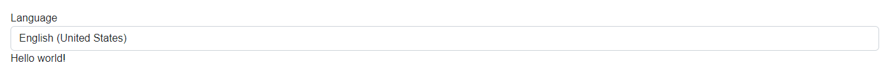
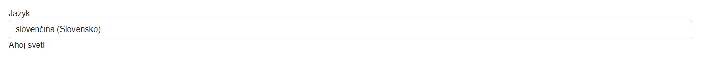
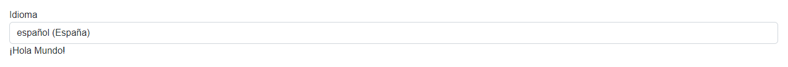

Template localization
Localization is a useful feature of any application. It allows you to translate the application into different languages. This guide will show you how localization is achieved in our template Blazor application - templates.simple.
Prerequisites
- Microsoft.Extensions.Localization NuGet package
Localization in Blazor
To make use of localization in Blazor, make sure that:
Localization services are added in
Program.cs:builder.Services.AddLocalization();Localization middleware with supported languages is added in the correct order to the middleware pipeline in
Program.cs:var supportedCultures = new[] { "en-US", "sk-SK", "es-ES"}; var localizationOptions = new RequestLocalizationOptions() .AddSupportedCultures(supportedCultures) .AddSupportedUICultures(supportedCultures); app.UseRequestLocalization(localizationOptions);In
_Imports.razorthe following@usingdirectives are added:@using System.Globalization @using Microsoft.Extensions.Localization
For more information on localization in Blazor visit Microsoft Docs.
Adding support for a new language
In order to add a new language support to the application, a resource file (.resx) needs to be created. Resource file are in the forefront of localization in .NET. They are used to store app data (in our case strings), that can be easily accessed and changed without recompiling the app.
In our template application, resource files are located in the Resources folder. Create a new resource file for the language you want to add. The name of the file should be in the following format: ResourceName.culture.resx, where culture is the culture code of the language. E.g. ResourceName.de.resx would be a resource file for German language.
If you want to make resource files easier to work with, check out ResXManager extension for Visual Studio.
In _Imports.razor make sure that the @using directive for the newly created resource file is added and inject the IStringLocalizer service of the resource file. E.g.:
@using axosimple.hmi.Resources
@inject IStringLocalizer<ResourceName> Localizer
Changing the language dynamically
To change the language dynamically, add a new CultureInfo object to the supportedCultures array in the code section of Index.razor. E.g.:
private CultureInfo[] supportedCultures = new[]
{
new CultureInfo("en-US"),
new CultureInfo("sk-SK"),
new CultureInfo("es-ES"),
new CultureInfo("de-DE") // newly added language
};
When selecting a language from the <select> menu in Index.razor, a cookie with selected language is created by ChangeCulture method of CultureController.
Using localized strings
To use localized strings, simply use Localizer service previously injected in _Imports.razor E.g.:
<h1>@Localizer["Hello World!"]</h1>
If the string is not found in the resource file, the key is returned instead. If it is found, however, the localized string is returned.
English:

Slovak:

Spanish:
